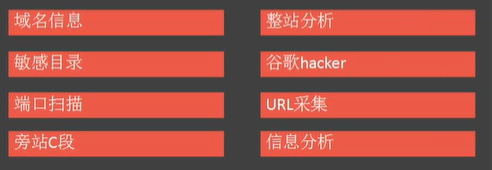
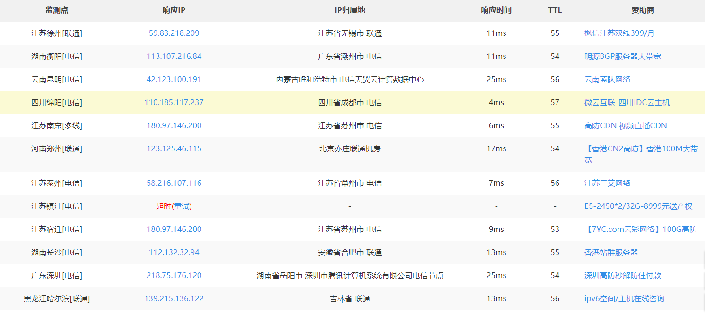

来自之前cnblog的博客
源地址：https://www.cnblogs.com/This-is-Y/p/11216357.html
大体分为8块（图片来源carcer）
- 域名信息
- 敏感目录
- 端口扫描
- 旁站C段
- 整站分析
- 谷歌hacker
- url采集
- 信息分析
1.域名信息
-对应IP收集
-相关域名对应IP，使用nslookup，各种工具网站
-子域名收集
-layer子域名挖掘机，SubDomainsBrute等
- whois信息查询
-使用各种网站爱站网，站长之家等，同时使用域名反查，得到注册人的详细信息
2.敏感目录
-主要是指robot.txt、后台目录、安装包、上传目录、mysql管理接口、安装页面、phpinfo、编辑器、iis短文件
-主要工具：
字典爆破 >>> 御剑、dirbuster、wwwscan、IIS_shortname_Scanner等
蜘蛛爬行 >>> 爬行菜刀、webrobot、burp等
3.端口扫描
端口及对应服务在这里（真多。。。。==）：https://blog.csdn.net/qq_43539064/article/details/96498160
工具：nmap、portsan、ntscan、telnet等
4.旁站C段
旁站：同服务器其他站点（其他下手对象）
C段：同一网段其他服务器
工具：
-web >>> k8旁站、御剑1.5
-端口 >>> portscan
5.整站分析
服务器类型：
服务器平台，版本等
网站容器：
搭建网站的服务组件，例如iis，Apache，nginx，tomcat
脚本类型：
ASP，PHP，JSP，aspx等
数据库类型
access，sqlserver，mysql，oracle，portgresql等
CMS类型
WAF
6.谷歌hacker
-Intext：
查找网页中有xx关键字的网站 Intext：管理员登陆
-Intitle：
查找某个标题 Intitle：后台登陆
-Filetype：
查找某个文件类型的文件 数据挖掘fFletype：doc
-Inurl：
查找url中带有某字段的网站 Inurl：php？id=
-Site：
在某域名中查找信息
在url后加 / 或 ‘ 返回错误，加-0返回正常时，存在注入漏洞
7.url采集
采集相关url的同类网站
例如：php？id= 、漏洞网站 、相同某种指纹网站
工具：上一节谷歌hacker、url采集器
8.后台查找
1.弱口令默认后台：admin、admin/login.asp、manage、login.asp等
2.查看网页链接：一般来说，网站的主页有管理登陆类似的东西
3.查看网站图片属性
4.查看网站使用的管理系统,从而确定后台
5.用工具查找,如wwwscan,intellitamper,御剑
6.robot.txt的帮助,robots.txt文件告诉爬虫在服务器上什么文件可以被查看
7.谷歌hacker
8.查看网站使用的编辑器是否有默认后台
9.短文件利用
10.sqlmap –sql-shell load_file(‘d/wwroot/index.php’);
9.CDN绕过
CDN:Content Delivery Network，即内容分发网络
使用站长之家的PING检测,

如果说响应IP不同,则说明有CDN服务器,反之则没有